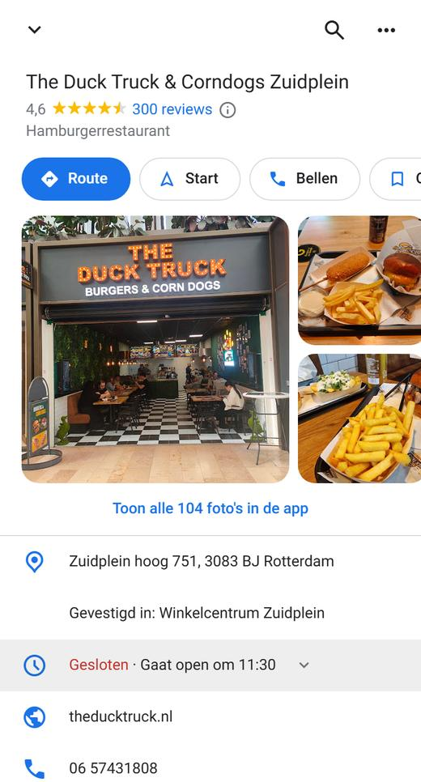
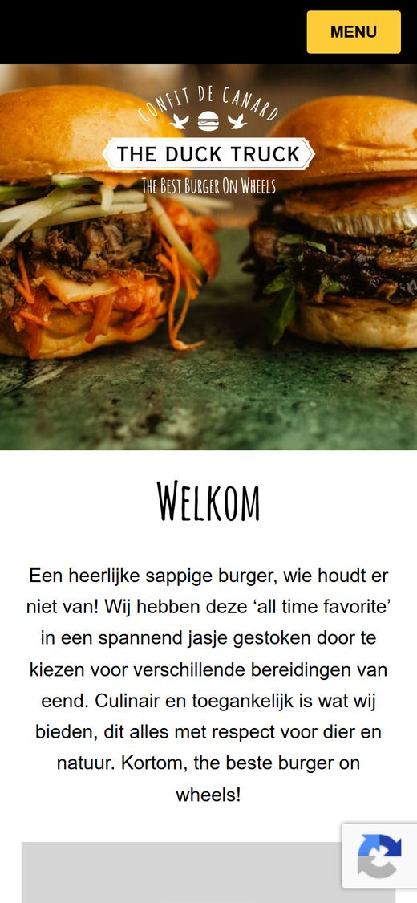
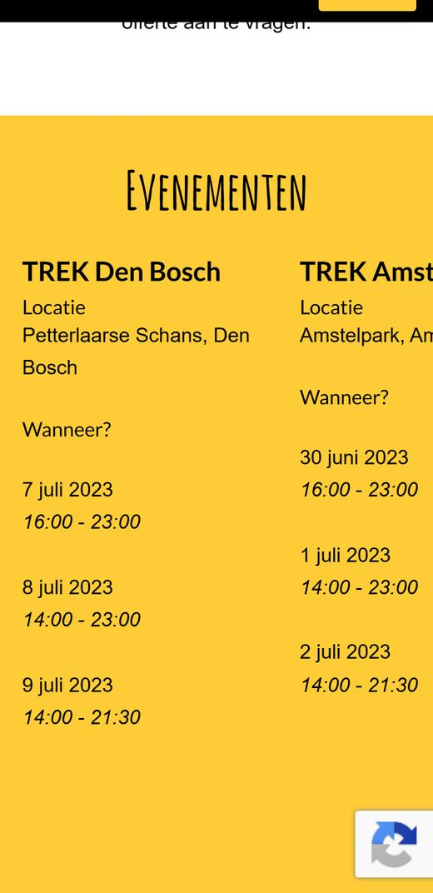
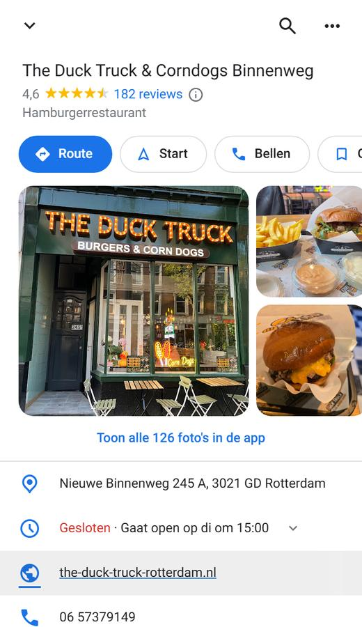
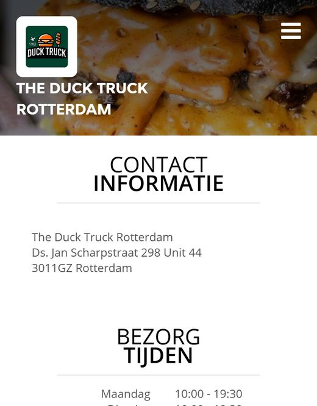
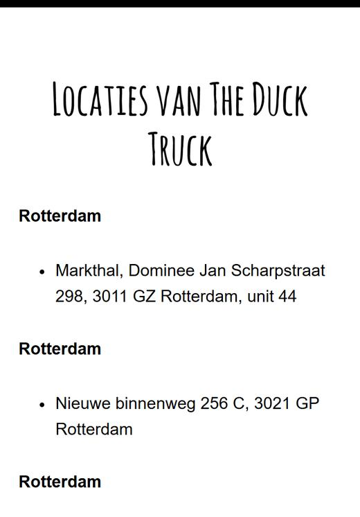
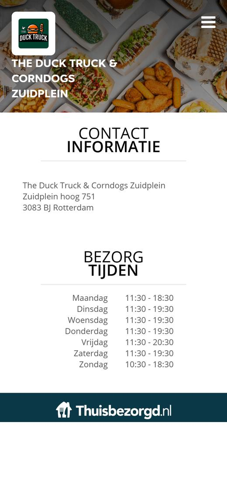
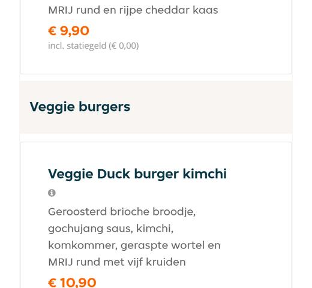
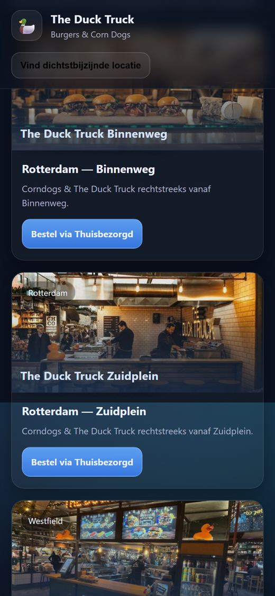
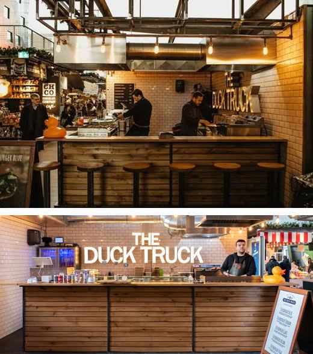

Wie "Duck Truck Zuidplein" zoekt, ziet dit. Sterk: 4,6 uit 300 reviews. Maar tik je op Website, dan gaat het mis.
★Zuidplein: 4,6 uit 300 · Markthal: 4,6 uit 498 · Binnenweg: 4,6 uit 182. Samen bijna 1.000 reviews.
→De knop Website van Zuidplein gaat naar theducktruck.nl, de site van de foodtruck.
Voor Mo: laat Edison zelf op zijn telefoon "Duck Truck Zuidplein" googelen en op Website tikken. Dan ziet hij het met eigen ogen.

Google Maps, Zuidplein · 9 nov 2026
2 Wat een klant daarna tegenkomt
Elf dingen die bestellingen kosten.
Alles hieronder hebben we zelf nagekeken op 9 november. Geen kritiek op het eten: dat is goed, zie de reviews. Het gaat om wat er online staat.
1 / 11
01
Google stuurt Zuidplein naar de foodtruck-site

theducktruck.nl
De homepage noemt Zuidplein niet, heeft geen bestelknop en geen telefoonnummer. Wel een knop "Offerte aanvragen" voor de foodtruck.
Wie wil bestellen, moet zelf Thuisbezorgd gaan zoeken.
Bron: Google Maps (website-knop Zuidplein) en theducktruck.nl, 9 nov 2026.
02
Nieuwste evenement: juli 2023

theducktruck.nl
Het blok Evenementen op de homepage stopt bij TREK Den Bosch, 9 juli 2023.
Wie op de homepage alleen evenementen uit 2023 ziet, gaat twijfelen of de agenda nog klopt.
Bron: theducktruck.nl, 9 nov 2026.
03
De Google-tekst noemt Den Haag
The Duck Truck bezoeken? Kom ons bezoeken in Den Haag, bij de HofHouse. Wij hebben daar een vaste foodcorner waar wij heerlijke DuckBurgers serverenOmschrijving voor zoekmachines (meta description) van theducktruck.nl/locaties
Den Haag en de HofHouse staan niet in jullie eigen lijst met locaties. Rotterdam, met drie vestigingen, komt in die zin niet voor.
Google kan juist die zin onder de link laten zien als iemand naar jullie locaties zoekt.
Bron: broncode theducktruck.nl/locaties, 9 nov 2026.
04
Binnenweg-klanten komen bij de Markthal uit

Google: Binnenweg

Daar: Markthal-adres
Op Google linkt de Binnenweg naar the-duck-truck-rotterdam.nl. Daar staat het adres van de Markthal, en de bestelknop gaat naar de Markthal op Thuisbezorgd.
Een bestelling voor de Binnenweg komt bij een andere vestiging terecht, of de klant haakt af.
Bron: Google Maps Binnenweg, the-duck-truck-rotterdam.nl (+ /contact), 9 nov 2026.
05
Twee adressen voor de Binnenweg

theducktruck.nl/locaties
De merksite zegt Nieuwe Binnenweg 256 C (3021 GP). Google en Thuisbezorgd zeggen 245 A (3021 GD).
Wie het adres van de site in zijn navigatie zet, loopt naar het verkeerde nummer.
Bron: theducktruck.nl/locaties, Google Maps, Thuisbezorgd, 9 nov 2026.
06
Eigen bestelsite: geen telefoon, geen e-mail

theducktruckcorndogsrotterdam.nl
De site van Zuidplein is een standaardsjabloon van Thuisbezorgd. Op "Contact" staan alleen het adres en de bezorgtijden.
Een vraag over allergie, een groep of een verloren bestelling? Er is geen nummer om te bellen.
Bron: theducktruckcorndogsrotterdam.nl/contact, 9 nov 2026.
07
Drie verschillende tijden voor maandag
Google Maps (open)
11:30–19:00
Verkenrotterdam (open)
12:00–19:45
Eigen bestelsite (bezorgen)
11:30–18:30
Zuidplein, maandag. Op vrijdag zegt Verkenrotterdam tot 20:45.
Wie Verkenrotterdam leest en om 19:30 komt, kan voor een dichte deur staan.
Bron: Google Maps (9 nov 2026), verkenrotterdam.nl, theducktruckcorndogsrotterdam.nl/contact.
08
Veggie Duck burger met "MRIJ rund"

bestelsite Zuidplein
Bij alle vijf de Veggie Duck burgers staat "MRIJ rund" in de omschrijving.
Een vegetarische gast twijfelt en bestelt iets anders, of niets.
Bron: theducktruckcorndogsrotterdam.nl, 9 nov 2026.
09
Halal staat niet waar klanten kijken
The Duck Truck & Corndogs Zuidplein - Contact - Burgers, 100% Halal, Patat bestellenPaginatitel (het tabblad) van de contactpagina van de bestelsite
Thuisbezorgd noemt jullie "100% Halal", en het staat in het tabblad van de contactpagina. Maar niet op de merksite (waar Google naartoe stuurt) en niet zichtbaar op de bestelsite. Gasten noemen het wel in hun reviews.
Voor veel gasten op Zuidplein is dit een reden om te kiezen. Laat het zien op de plek waar Google ze heen stuurt.
Bron: theducktruck.nl, theducktruckcorndogsrotterdam.nl (+ /contact), Thuisbezorgd, 9 nov 2026.
10
Groepspagina: Markthal ontbreekt, foto klopt niet

bij "Zuidplein"

boven: groep · onder: markthal.nl
theducktruckgroup.nl noemt vijf vestigingen, de Markthal niet. En bij "Zuidplein" staat een foto van de Markthal-stand: dezelfde houten toonbank als op markthal.nl.
Klanten zien een andere zaak dan waar ze naartoe gaan.
Bron: theducktruckgroup.nl (assets/zuidplein.jpg), markthal.nl, 9 nov 2026.
11
Reviews krijgen geen antwoord
Zuidplein
0 van 20
Markthal
0 van 20
Binnenweg
0 van 20
Van de laatste 20 Google-reviews per vestiging kreeg er geen enkele een antwoord.
Kans: een antwoord op reviews laat zien dat er iemand thuis is. Het Google-profiel op orde brengen kan als extra (€ 75).
Bron: Google Maps-reviews, laatste 20 per vestiging, 9 nov 2026.
Voor Mo: begin met 01, 04 en 08: die voelt hij meteen. 10 alleen als de Markthal van hem is.
3 Zo wordt het
Van foodtruck-site naar bestel-site.
Bestellen bij de juiste vestiging in één tik, bovenaan en als vaste knop op de telefoon.
De hele kaart met prijzen, en een bestelzuil: vlees, smaak, los of menu.
Per vestiging een eigen pagina met het juiste adres, telefoon en route.
Halal en vegetarisch kloppen en staan in beeld.
Bewegend beeld als eerste scherm, gemaakt van jullie eigen gevelfoto.
Voor Mo: A = video schermvullend, tekst eroverheen. B = tekst naast de volledige video. Op de site zelf wissel je met het knopje rechtsboven in de video.
4 Drie vestigingen
Eén site. Elke vestiging een eigen pagina.
Geen drie losse sites, maar één. Elk Google-profiel linkt naar zijn eigen pagina, met de eigen bestelknop, route, tijden en reviews.
Voor Mo: vraag eerst welke vestigingen van hem zijn. Elke vestiging heeft een eigen BV, en de Markthal staat niet op zijn groepspagina. Meer dan deze 5 pagina's of meerdere klanten: prijs eerst langs Mo/Ops.
Breda, Leidschendam of Nieuwegein erbij? Dat is een extra pagina: € 75 per stuk.
5 Rekensom
Wat levert het op?
Vul het samen in. Dit is een voorbeeld, geen belofte.
Extra omzet per jaar€ 4.654
€ 595 is de omzet van34bestellingen
Voorbeeld om samen in te vullen, geen belofte. Omzet, vóór de kosten van Thuisbezorgd. De standaardwaarde € 17,90 is de prijs van het Duckburger menu op Zuidplein.
6 Het aanbod
Live binnen 48 uur.
€ 595
eenmalig · hosting inbegrepen
Website tot 5 pagina's, gemaakt voor de telefoon
Op jullie eigen domein (dat blijft van jullie, wij koppelen het)
Bestelknoppen naar Thuisbezorgd, WhatsApp-knop
Contact- of offerteformulier
Google-reviews en locatie op de site
Basis-SEO, zodat Google de juiste pagina vindt
1 feedbackronde
Live binnen 48 uur na betaling
Google Bedrijfsprofiel op orde€ 75
Onderhoud€ 25 / mnd
Extra pagina (bijv. Breda)€ 75
De volgende stap
Ja zeggenJe krijgt een betaallink.
Foto's, tijden en vestigingen doorgevenEen korte vragenlijst.
Binnen 48 uur liveDaarna één feedbackronde.
Dan Papi ChuloZelfde aanpak: een eigen site, klaar voor de opening.
Voor Mo: eerst vragen welke vestigingen van Edison zijn; meerdere eigenaren/BV's = prijs eerst langs Mo. Geen andere kortingen dan in het aanbod.